Paintings on Stamps, from the Modern Art Museum, Paris
|
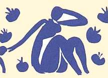 |
National Museum
of Modern Arts
in Paris, France
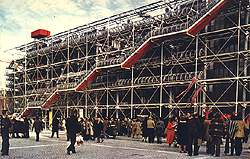
|
To Georges Pompidou
Centre
national d'art et de culture Georges Pompidou (National Center of
Art and Culture) is a public establishment in Paris that was
inaugurated in 1977. The strange building,
looking more like a gas factory than like a museum, was
conceived by the architects P. Piano and R. Rogers. Tip:
Point on the stamps with the mouse index for more information about
the works of art displayed and about the stamps.
|
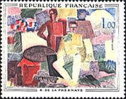 |
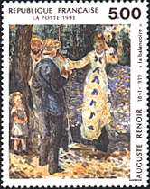 |
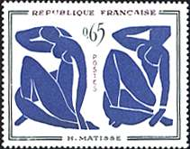 |
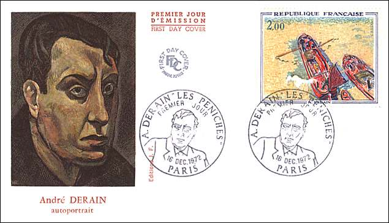
Georges Pompidou is the man who mostly contributed to the creation of the National Center of Art and Culture.
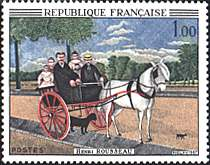 |

|
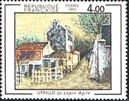 |
He was a French politician. Between 1962-1968 he was Prime Minister and after that, till his death in 1974, President of the French Republic.
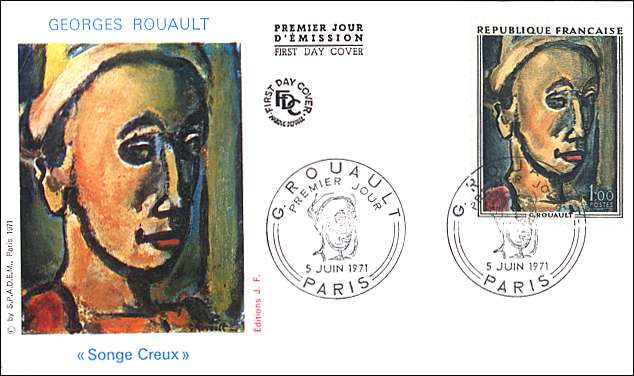
Georges Pompidou was fascinated by the modern art and culture. (After: Petit Larousse en couleurs, Librairie Larousse, 1988)
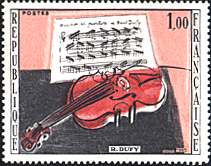 |
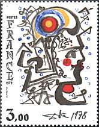 |
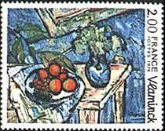 |
Link: Centre Pompidou